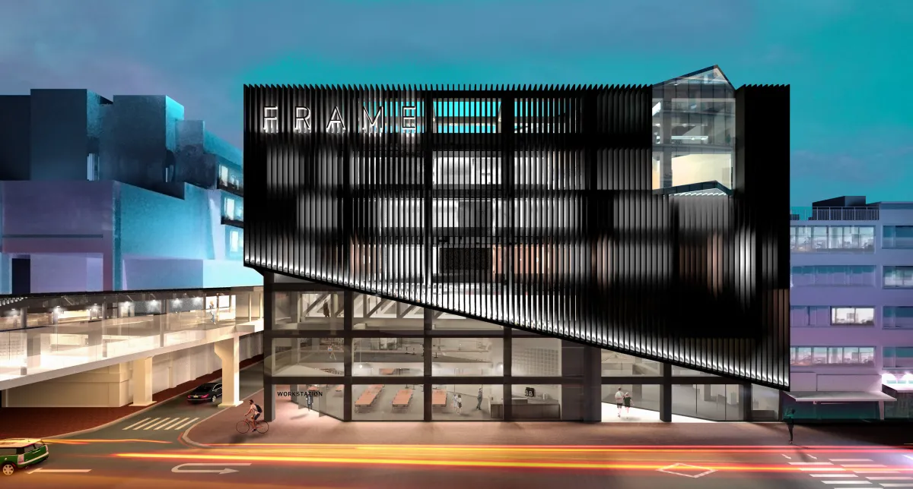
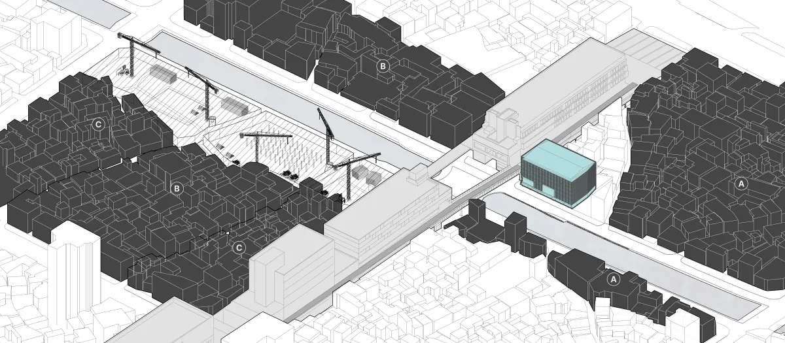
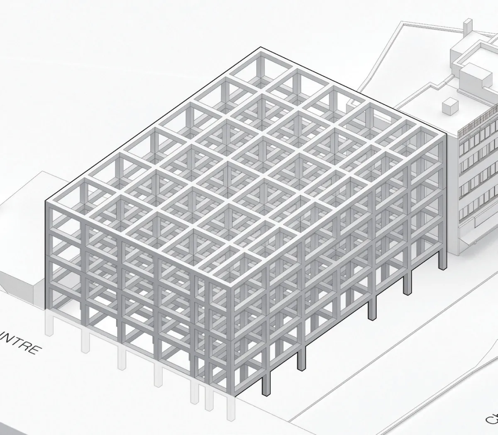
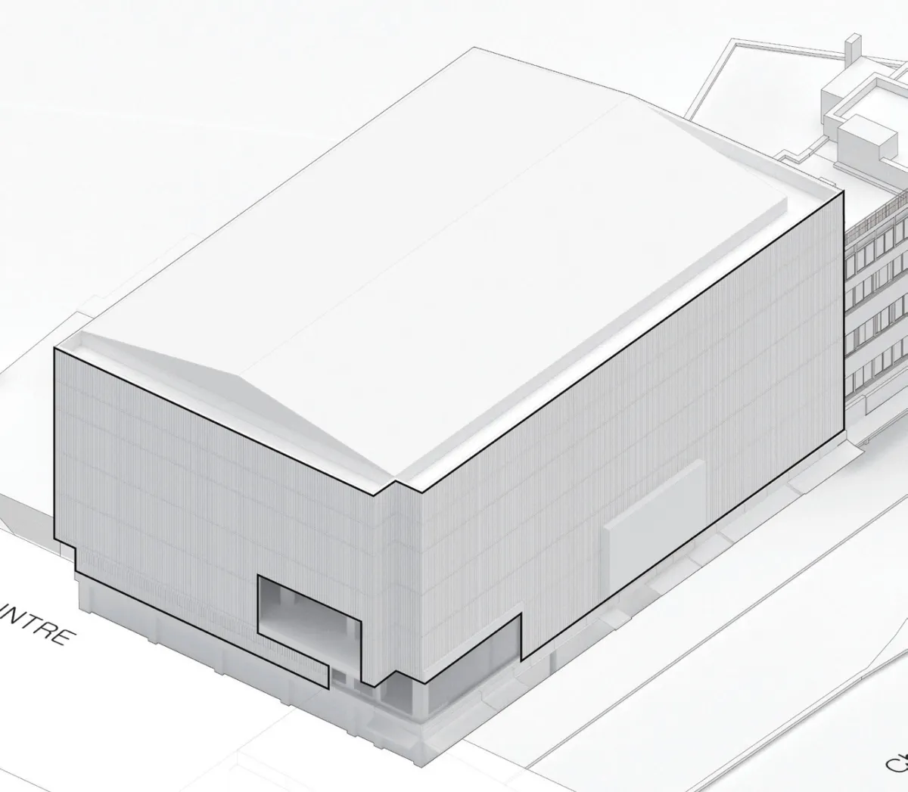
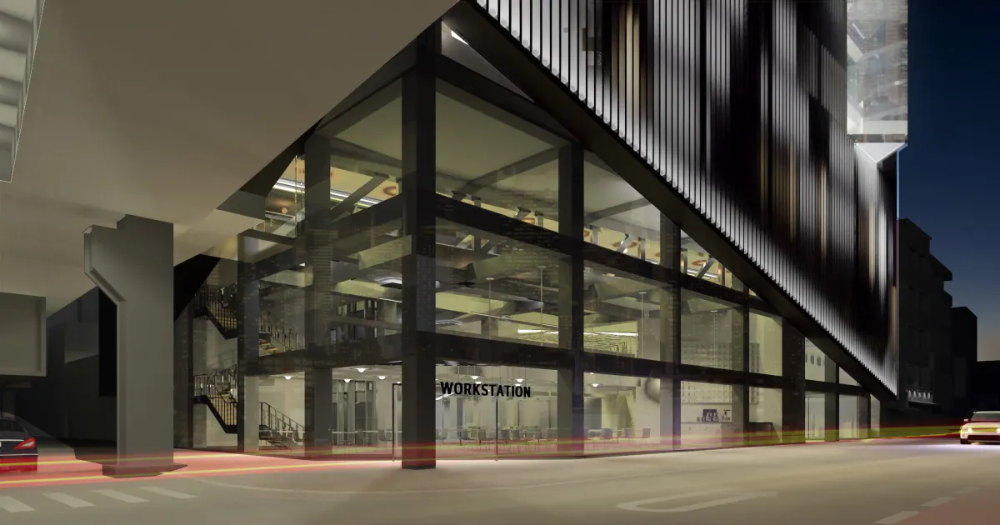
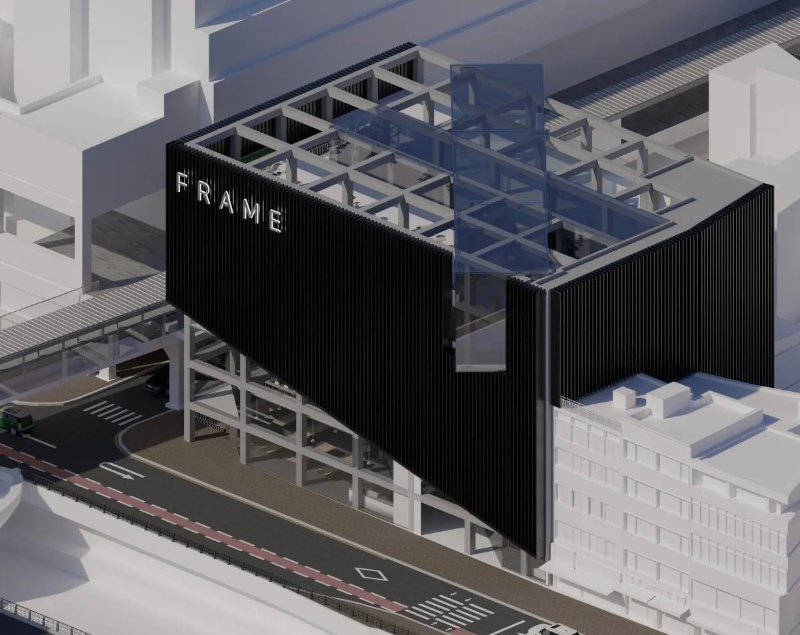
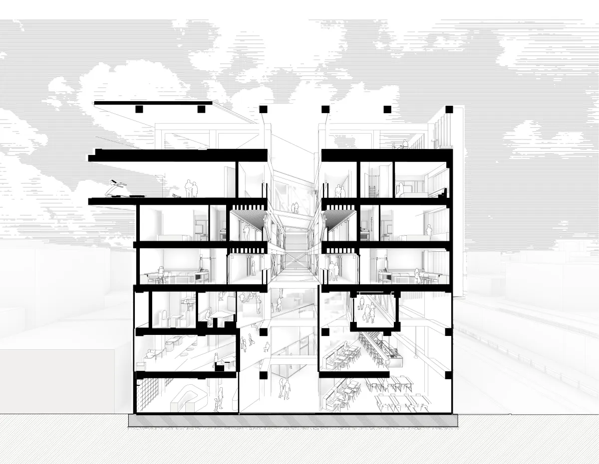
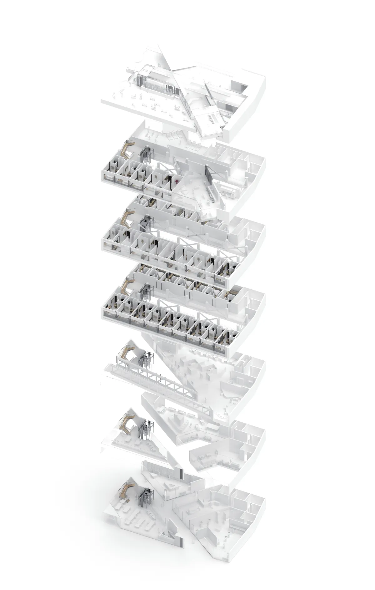
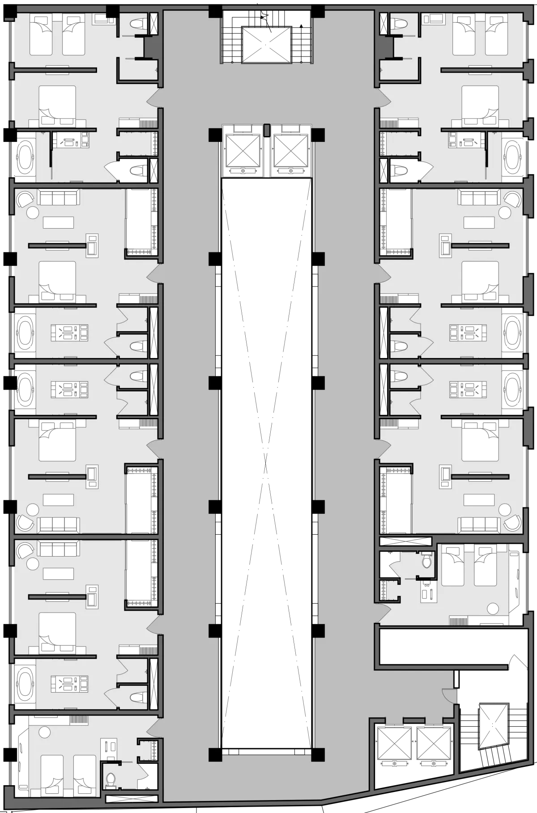
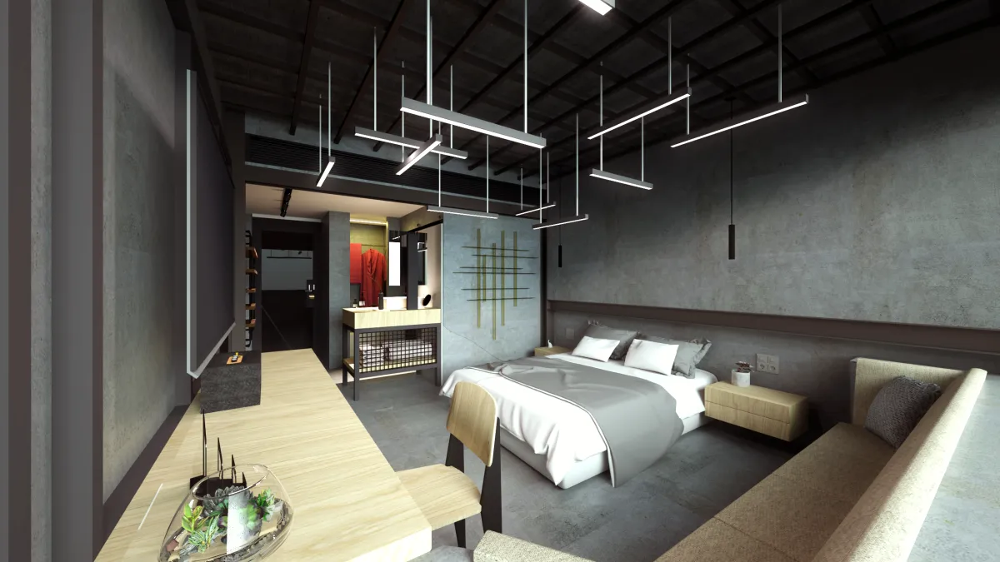

FRAME
을지로 전자상가 호텔 리모델링
Adaptive Reuse Hotel in Euljiro
지은 지 60년이 넘은 을지로 아세아전자상가를 국내외 관광객을 위한 호텔로 바꾼다.

아세아전자상가는 5층 라멘 구조 상가다. 세운상가와 이어져 유동 인구가 많고, 을지로 공방 거리의 분위기를 그대로 느낄 수 있다. 을지로를 작은 공방이 모여 하나의 큰 공장처럼 움직이는 도시로 읽고 컨셉을 잡았다.
도면이 없어 기둥을 직접 세어 구조를 되찾았다. 라멘 구조와 샌드위치 패널, 두 요소만 남겼다. 파사드는 낮과 밤에 다르게 보인다.
Site

Design Elements


Exterior


Atrium

Hotel Programs


Rooms
